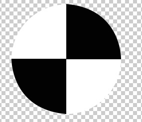
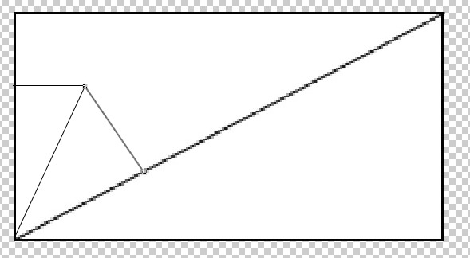

360面试记录 2017-05-18
2017-05-22 星期一 丁酉年 四月廿七
【鸡年】乙巳月 己酉日
宜：祭祀 祈福 斋醮 求嗣 安机械
忌：动土 破土 嫁娶 嫁娶
没有设么可说的，笔试题比较基础，多刷刷面试题就行，唯一想说的是俩题；
1.css实现下面的图形

解答
<!DOCTYPE html>
<html>
<head>
<title>360笔试题</title>
<meta charset="utf-8">
<style type="text/css">
#main {
width: 1000px;
height: 500px;
margin: 0 auto;
text-align: center;
background-color: rgba(0, 0, 0, .4);
overflow: hidden;
}
.bingtu {
width:0;
height:0;
border-radius:100px;
border-width:100px;
border-style:solid;
border-color: #fff #000 #fff #000;
line-height:99em;
overflow:hidden;
cursor:pointer;
margin: 30px auto;
transform: rotate(45deg);
}
</style>
</head>
<body>
<div id="main">
<div class="bingtu"></div>
</div>
</body>
</html>
2.求鼠标移动过程中到对角线的距离

当时用数学转换没做出来，现在继续数学做，不写代码了
思路：
js可以获取到矩形的宽高 设置为 w h 从而对角线距离也可以算出，设置为 s
矩形左下角坐标可以找到为 (0, -h)
鼠标移动时的坐标可以找到 设置为 (x, y)
那么鼠标点到矩形左下角距离可以算出为 s1
知道了鼠标的宽和到矩形左下角距离，那么与矩形左边构成的角也可以找到
而矩形的宽高知道，所以左下角度也已知；
根据 5 6可以算出鼠标与左下角连线与对角线构成的角度
由角度和斜边，从而求出到对角线的距离
完毕，其实好简单的说

微信打賞

支付寶打賞